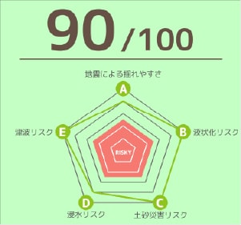
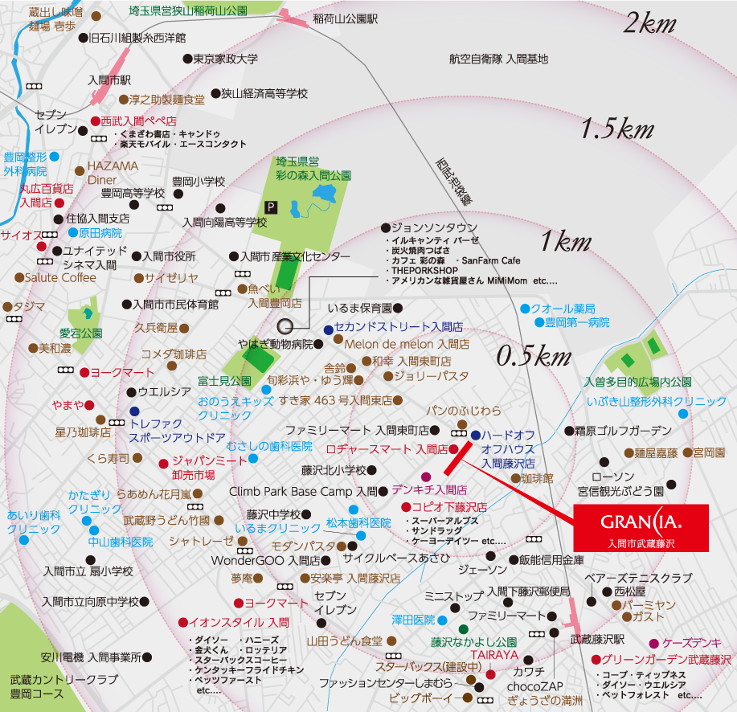
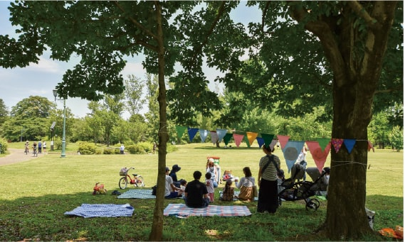
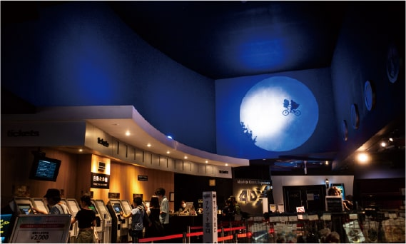
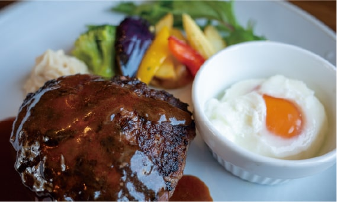
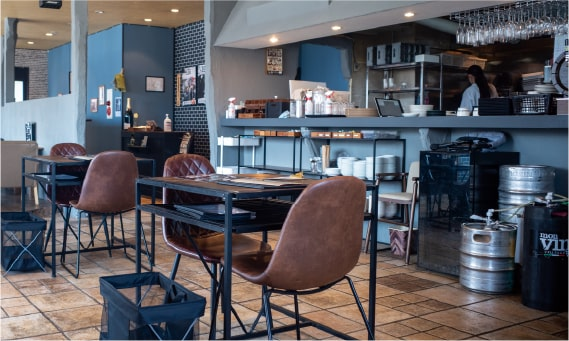
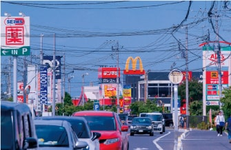

家族の幸せを願う、「暮らす理由」があふれる高台の街。
武蔵藤沢～入間市豊岡エリアは、利便性と快適な暮らしを享受できるオンリーワンな場所です。
現地から2キロ圏内には、四季折々の景色を楽しめる彩の森公園はもちろん、
ユナイテッドシネマ入間やジョンソンタウン等の文化施設、イオンモールをはじめとする
買い物施設やあらゆる外食店、クリニックが点在。
都市的利便性と豊かな自然が溶け合うこの地は、家族の安心を支える強固な地盤も魅力の一つ。
安心して暮らせる街で、心を解放できる街で、生きがいを感じながら暮らして欲しい―。
そんな願いを込めた分譲地で、ご家族の新たな暮らしをスタートしてはいかがでしょうか？
- 
-
安定した地盤エリア。液状化、震災リスクの軽減など、「定住」に適した街。
地盤スコア90
地盤安心マップPROより
-
市民に愛される彩の森入間公園が1.5キロ圏内にあり、
買い物施設や外食施設、医療施設が充実。
ジョンソンタウンや、ユナイテッドシネマ等のエンターテインメント施設もあり、 子育て世代はもちろん、様々な年代の方におススメです。 -

だからハッピー！入間市の暮らし。
地元から愛される「彩の森公園」
自転車6～7分
- 
季節ごとに様々な表情を見せる彩の森公園は、ジョギングコースや、多目的広場、大きな二つの池や沢山の木々があり、開園と同時に賑わいます。もちろん、駐車場も完備。
カワセミ等の野鳥や、カモ、アオサギ、カメ等の野生動物に出会う事もでき、ここで食べるお弁当は格別です！
公園内でのイベントも多く、紙芝居や、パークピラティス等、様々なイベントが開催されています。少年たちがバスケットボールを練習している姿等も、とても絵になる公園です。
映画館だって近くに！
ユナイテッドシネマ入間。自転車で11～12分
- 
気になる映画が公開されたら、ちょっと自転車でユナイテッドシネマ入間まで。4DXもある9つのスクリーンで構成される映画館です。 ビルに入り、薄暗くいブルー貴重の照明のエスカレーターに乗っている時には、子どもはもちろん、大人もワクワクする瞬間です。 シートも広く快適。サブスクが全盛の昨今ですが、開館した2000年から20年以上の月日が経過しても、この様に人気があるのは嬉しいですね。
映画の後は美味しい料理を！
夢味牛でお馴染みハザマダイナー！2230～2460m
自転車で12～13分
- 
- 
たくさんの美味しい料理店が名を連ねる入間市～武蔵藤沢界隈ですが、ちょっと珍しいのが「ハザマダイナー」さん。 入間市産ブランド牛「彩の夢味牛」使用、高級感のある肉質のお肉を手頃な価格で楽しめます。お味は、「こんなにも美味しい地元産のお肉があるの？」と驚いてしまう程。 付け合わせの野菜やバーニャカウダーには入間市内の有機畑『FAMFARM』で採れた無農薬・無化学肥料の新鮮な野菜を使用しており「地元産直」に拘ったお店です。
-
家族の願いを叶える
ZEH水準の注文住宅。イメージ
住協グループの家は、自由設計。あんな間取りの家に住みたい、こんなデザインの家に住みたい、夫婦の憩いの場が欲しい、ウッドデッキが欲しい等、あなただけの専属の設計士が、夢を叶えるお手伝いをいたします。
-
良質な住環境と、

毎日の利便性が共存。分譲地近くの安川通り。
多くの商業施設があります。現地周辺は、多くの買い物施設で充実しながらも、快適で良質な住環境が広がるエリア。暮らしやすさという面では子育て世代にも、勿論子育てを終えた世代にも自信を持っておススメできる永住地であると云えます。
-
子どもを中心とした
コミュニティ形成イメージ
新しく生れる街区だから、子どもを中心にコミュニティが形成されやすい特徴があります。「引っ越したけど近所に馴染めない」といった悩みがも少なく、ストレスのない新生活が期待できます。


-
設計士からのメッセージ
住協建設株式会社
設計部設計課 高橋真人 Masato Takahashi私の設計士としてのモットーは、お客様の意向をヒアリングし『同じ家族の一員になったつもりで、自分も一緒に住んでいるイメージをしながら』提案をする事です。そうすると不思議なもので、ご家族の願う暮らしのイメージや、今の暮らしの課題や問題点等が自然に見えてくるのです。深くお客様を知り、問題点を共有し、寄り添うことで、お客様の理想とする暮らしを実現する事が我々住協グループ設計士の仕事。我々一人ひとりの設計士は、絶えずあらゆる情報を共有し、感性と技術を磨き続けている事も強みであると言えます。当然、「森と湖の18街区」においても、18家族に寄り添い、丁寧な設計を行います。
住協建設株式会社
設計部設計課高橋真人 Masato Takahashi
私の設計士としてのモットーは、お客様の意向をヒアリングし『同じ家族の一員になったつもりで、自分も一緒に住んでいるイメージをしながら』提案をする事です。そうすると不思議なもので、ご家族の願う暮らしのイメージや、今の暮らしの課題や問題点等が自然に見えてくるのです。深くお客様を知り、問題点を共有し、寄り添うことで、お客様の理想とする暮らしを実現する事が我々住協グループ設計士の仕事。我々一人ひとりの設計士は、絶えずあらゆる情報を共有し、感性と技術を磨き続けている事も強みであると言えます。当然、「グランシア武蔵藤沢」においても、18家族に寄り添い、丁寧な設計を行います。
-
私の設計士としてのモットーは、お客様の意向をヒアリングし『同じ家族の一員になったつもりで、自分も一緒に住んでいるイメージをしながら』提案をする事です。そうすると不思議なもので、ご家族の願う暮らしのイメージや、今の暮らしの課題や問題点等が自然に見えてくるのです。深くお客様を知り、問題点を共有し、寄り添うことで、お客様の理想とする暮らしを実現する事が我々住協グループ設計士の仕事。我々一人ひとりの設計士は、絶えずあらゆる情報を共有し、感性と技術を磨き続けている事も強みであると言えます。当然、「森と湖の18街区」においても、18家族に寄り添い、丁寧な設計を行います。